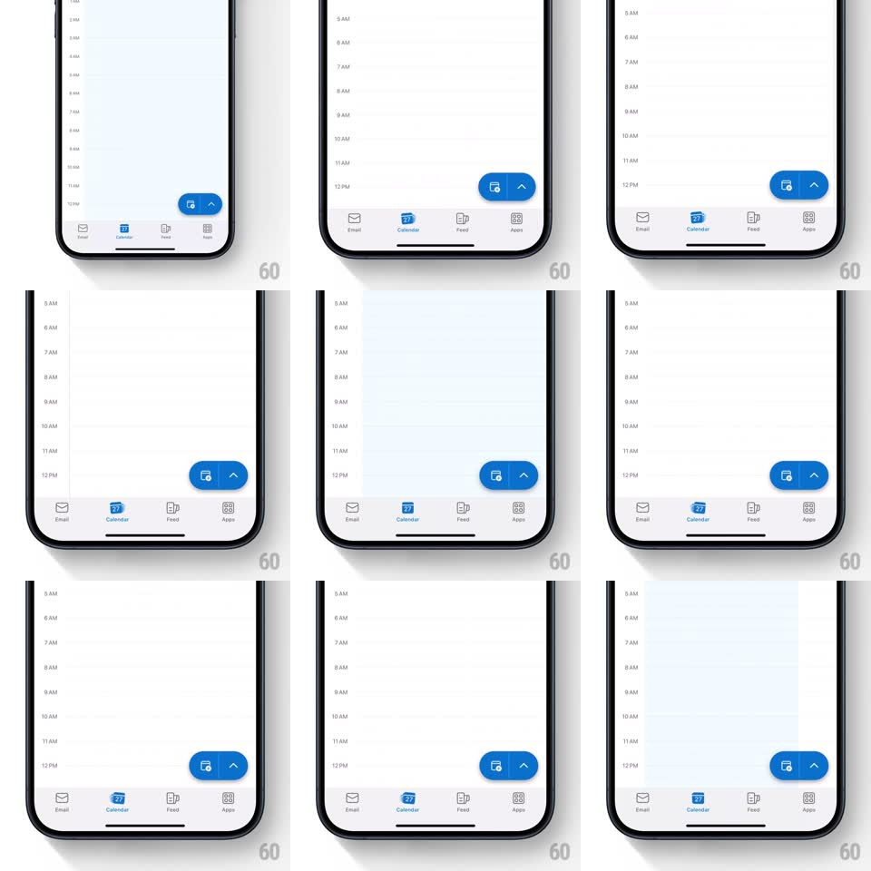

Media
Frame-by-frame

Rebuild this interaction 1:1: Outlook's calendar tab icon play - scrolling the day view makes the active Calendar tab icon tilt and roll its little page, a tiny mechanical flourish tied directly to scroll velocity.

Rebuild this interaction 1:1: Outlook's calendar tab icon play - scrolling the day view makes the active Calendar tab icon tilt and roll its little page, a tiny mechanical flourish tied directly to scroll velocity. ## Integration Integration: stack-agnostic spec - springs given as stiffness/damping, timed motions as duration + curve; map every value to your framework and animation library of choice. ## Scene Outlook's Calendar tab: a day timeline (hour labels 5 AM - 12 PM), an empty light surface, a blue floating action pill (event icon + chevron) bottom-right, and the bottom tab bar (Email, Calendar active in blue, Feed, Apps). ## Motion spec Pattern: scroll-coupled tab-icon tilt. - While the timeline scrolls, the Calendar tab icon tilts in the scroll direction (rotate up to +-12deg, mapped from scroll velocity, clamped) and its inner calendar page glyph rolls/shifts a few px as if flipping. - When scrolling stops, the icon springs back upright (spring ~300/18, slight settle wobble). - The icon's blue active state is constant - only the geometry plays; the label never moves. - The FAB stays put; the animation is confined to the tab icon. ## Calibration - Mapping: tilt = clamp(velocity * k, -12deg, +12deg); it must feel coupled, not triggered - no discrete animation per scroll event. - The effect is subtle enough to miss on one swipe and charming on the third. ## Reduced motion Icon stays static during scroll. ## Don't miss - The tilt axis is the icon's bottom edge - it rocks like a desk calendar, not spins like a coin. - Inactive tabs never animate; the playfulness is a reward for being where you are.